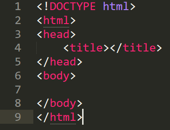
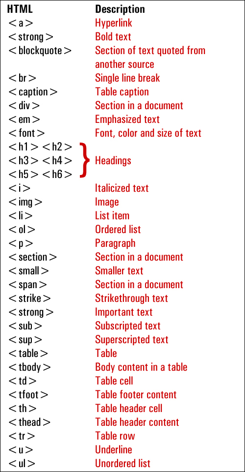

1.A Text Editor
An important aspect of Project Management is documentation. We need to keep a journal of our prototype project to show our journey, reflect on what we have done and provide a reference for future work. An essential tool is the “pure” text editor.
Look at some of the recommended examples below and choose one that you feel suits your working environment the best, and install it on your computer.
2. Install Autodesk Fusion 360 Here
This is a CADD (Computer Aided Design & Drafting) tool which allows you to digitally design,
envision and simulate your project. The link provided is to the Education version. You should
A good text editor should be simple to use and available on a variety of platforms. The choice is arbitary,
however, the following criteria are often used to make a choice:
All websites are developed using HTML, also known as HyperText Markup Language.
The language describes how the information is to be displayed in a web browser.
In order to make information available on the www, you will need:
However nowadays, you would need more than just HTML to create a dynamic webpage. Here's how:
Commands to start with |
 |
More commands |
 |
Videos to aid you:
{kind=link}
{kind=link}